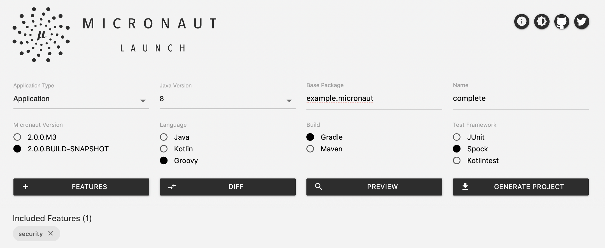

2 Writing the Application
Version: null
2 Writing the Application
Create an App with the Command Line Interface
Create an app using the Micronaut Command Line Interface.
mn create-app example.micronaut.complete --lang=groovy --test=spock
The previous command creates a micronaut app with the default package example.micronaut in a folder named complete.
By default, create-app creates a Java Micronaut app that uses the Gradle build system. However, you could use
other build tools such as Maven or other programming languages such as Groovy or Kotlin.
Create an App with Micronaut Launch
You can create the app using Micronaut Launch

2.1 Security Dependency
Add Micronaut’s security dependency to your build file.
build.gradle
dependencies {
...
..
.
compileOnly("io.micronaut:micronaut-security-annotations")
implementation("io.micronaut:micronaut-security")
}2.2 Authentication Provider
To keep this guide simple, create a naive AuthenticationProvider to simulate user’s authentication.
src/main/groovy/example/micronaut/AuthenticationProviderUserPassword.groovy
package example.micronaut
import edu.umd.cs.findbugs.annotations.Nullable
import groovy.transform.CompileStatic
import io.micronaut.http.HttpRequest
import io.micronaut.security.authentication.AuthenticationException
import io.micronaut.security.authentication.AuthenticationFailed
import io.micronaut.security.authentication.AuthenticationProvider
import io.micronaut.security.authentication.AuthenticationRequest
import io.micronaut.security.authentication.AuthenticationResponse
import io.micronaut.security.authentication.UserDetails
import io.reactivex.BackpressureStrategy
import io.reactivex.Flowable
import org.reactivestreams.Publisher
import javax.inject.Singleton
@CompileStatic
@Singleton (1)
class AuthenticationProviderUserPassword implements AuthenticationProvider { (2)
@Override
Publisher<AuthenticationResponse> authenticate(@Nullable HttpRequest<?> httpRequest, AuthenticationRequest<?, ?> authenticationRequest) {
Flowable.create({ emitter ->
if ( authenticationRequest.identity == "sherlock" && authenticationRequest.secret == "password" ) {
emitter.onNext(new UserDetails((String) authenticationRequest.identity, [])) as Flowable<AuthenticationResponse>
} else {
emitter.onError(new AuthenticationException(new AuthenticationFailed()))
}
emitter.onComplete()
}, BackpressureStrategy.ERROR)
}
}| 1 | To register a Singleton in Micronaut’s application context, annotate your class with javax.inject.Singleton |
| 2 | A Micronaut’s Authentication Provider implements the interface io.micronaut.security.authentication.AuthenticationProvider |
2.3 Controllers
Create a file named HomeController which resolves the base URL /:
src/main/groovy/example/micronaut/HomeController.groovy
package example.micronaut
import groovy.transform.CompileStatic
import io.micronaut.http.MediaType
import io.micronaut.http.annotation.Controller
import io.micronaut.http.annotation.Get
import io.micronaut.http.annotation.Produces
import io.micronaut.security.annotation.Secured
import io.micronaut.security.rules.SecurityRule
import java.security.Principal
@CompileStatic
@Secured(SecurityRule.IS_AUTHENTICATED) (1)
@Controller (2)
class HomeController {
@Produces(MediaType.TEXT_PLAIN) (3)
@Get (4)
String index(Principal principal) { (5)
principal.name
}
}| 1 | Annotate with io.micronaut.security.Secured to configure secured access. The isAuthenticated() expression will allow access only to authenticated users. |
| 2 | Annotate with io.micronaut.http.annotation.Controller to designate a class as a Micronaut controller. |
| 3 | By default a Micronaut’s response uses application/json as Content-Type. We are returning a String not a JSON object. Because of that, we set it to text/plain. |
| 4 | You can specify the HTTP verb that a controller’s action responds to. To respond to a GET request, use the io.micronaut.http.annotation.Get annotation. |
| 5 | If a user is authenticated, Micronaut will bind the user object to an argument of type java.security.Principal (if present). |